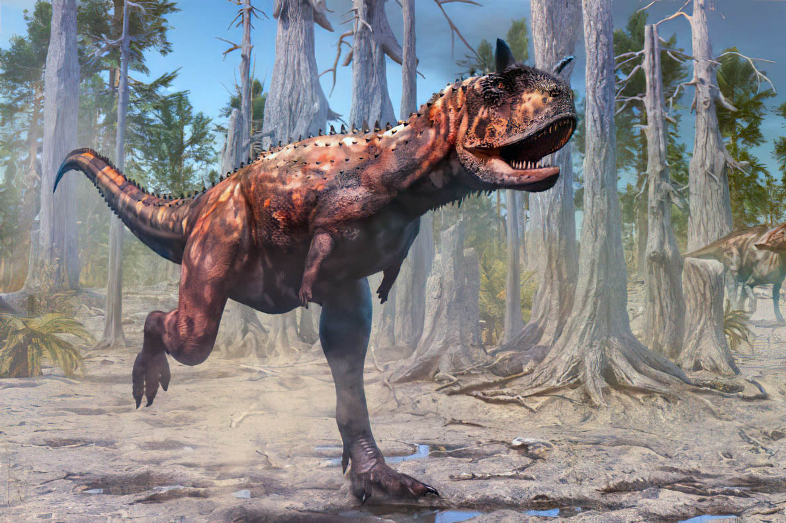
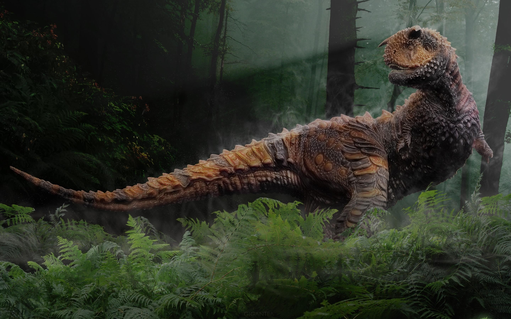
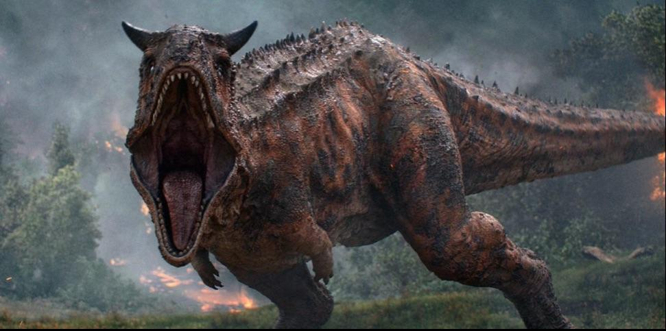

Карнотавр был одним из самых быстрых крупных хищников своего времени. Благодаря длинным ногам и мощному телу он мог стремительно преследовать добычу. Над глазами располагались два рога, которые придавали ему устрашающий вид.


